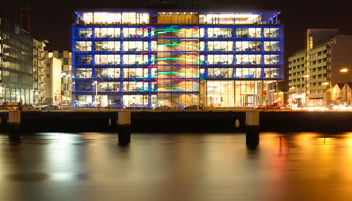

Dublin By Night A photography essay

Ormond Quay
A photograph of Ormond Quay, Dublin. Taken on a cold December night as a piece for a photography essay assignment.

Sir John Rogerson's Quay
Capturing how Dublin illuminates st night under the many colourful lights.